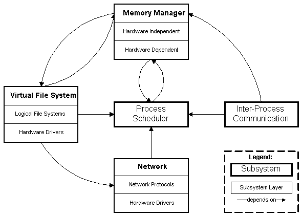

1、linux进程管理的模块组织框架
2、相关数据结构。
3、进程调度原则，调度算法,。
4、进程的创建和运行管理。
5、进程间通讯。
（1～5结合源代码进行分析）
6、具体分析：一个进程在系统中的生存周期和行为
7、更多的技术
进程管理和其他内核模块的交互关系
进程管理涉及的内核机制（锁，等待队列，定时器……）
和中断处理，module运行的交互
Linux/SMP的进程管理和调度技术
5、概述2.4的新特点
===========================================================
1、linux进程管理的模块组织框架
1、1 进程管理要解决的中心问题
- allow processes to create new copies of themselves
- determine which process will have access to the CPU and effect
the transfer between running processes
- receive interrupts and route them to the appropriate kernelsubsystem
- send signals to user processes
- manage the timer hardware
- clean up process resources when a processes finishes executing
- dynamicallyloaded modules
T
1、2 在整个内核中的功能位置和源码依赖关系

进程调度模块的界面：
first, itprovides a limitedsystem call interface that userprocesses
maycall;
secondly, it providesa rich interface to the rest of thekernel system.
进程调度模块和其他模块的相互依赖关系：
The process scheduler requires the memorymanager to setupthe
memory mapping when a process is scheduled.
Further, the process scheduler depends on the IPC subsystem forthe semaphore
queues that are used in bottom-half-handling
Finally, the process schedulerdepends on the file system to load loadable
modules from the persistent device.
All subsystems depend on the processscheduler, since they need to
suspenduser processes whilehardware operations complete
.
2、相关数据结构。
task_struct represents a Linux task.
进程状态信息：
- running
- returning from system call
- processing an interrupt routine
- processing a system call
- ready
- waiting
进程调度依据：
- processespriority： the number of clock ticks (10msintervals)
whichthe process can continue executing withoutforced rescheduling.
- the errornumber of the last faulting system call.
进程索引结构：
- 双向链： a doublylinked list is maintained, (through two fieldsthat
pointtotask_struct).
- 树结构：originalparent, parent, youngest child, younger sibling,and
finallyolder sibling.
内存管理接口：mm_structda


－－－－－－－－－－－－－－－－－－－－－－－－－－－－－－－－－－－－－－
dafs
dfadfasfaaad
Process ID information is also kept within the task_struct.Theprocessand
group id are stored. An array of group id’sis provided sothata process
can be associated with more thanone group.
File specific process data is located in a fs_structsubstructure.
Thiswill hold a pointer to the inode correspondingto a processors root directory,
and it’s current workingdirectory.
All files opened by a process will be kept track of throughafiles_structsubstructure
of the task_struct.
Finally, there are fields that hold timing information; forexample,
theamount of time the process has spent in user mode.
All executing processes have an entry in the process table.Theprocesstable
is implemented as an array of pointers to taskstructures. Thefirstentry in
the process table is the specialinit process, which is thefirstprocessexecuted
by the Linuxsystem.
Finally, a module structure is implemented to represent theloaded
modules.This structure contains fields that are used toimplement a list of
modulestructure: a field which points to themodules symbol table, and another
fieldthat holds the name ofthe module. The module size (in pages), and apointerto
thestarting memory for the module are also fields within the modulestructure.
3、进程调度原则，调度算法,。
原则
算法
The process scheduler subsystem is primarily responsible fortheloading,execution,
and proper termination of user processes.The schedulingalgorithmis called
at two different points duringthe execution of a userprocess.First,there
are system callsthat call the scheduler directly, suchas sleep().Second,afterevery
system call, and after every slow system interrupt(describedina moment),
the schedule algorithm is called.
Direct invocation
Thescheduler is invoked directly when the
current process must be blocked right away because the resource
it needs is notavailable. In this case, the kernel routine that wants toblock
it proceedsas follows:
- Inserts
current
in the proper wait queue
- Changes the state of
current either to TASK_INTERRUPTIBLEor
to TASK_UNINTERRUPTIBLE
- Invokes
schedule(
)
- Checks if the resource is available; ifnot,
goes to step 2
- Once the resource is available, removes
current from the wait queue
% waitqueue
Youmay have noticed that these steps are similarto
those performed by the sleep_on( )and
interruptible_sleep_on( )
functionsdescribed in the section "Wait Queues" . However,the functions we
discusshere immediately remove the process from the waitqueue as soon as
it is wokenup.
% device driver
Thescheduler is also directly invoked by many device
drivers that execute longiterative tasks. At each iteration cycle, the driver
checks the value ofthe need_resched field and,
if necessary, invokes schedule( )
to voluntarily relinquish the CPU.
Lazy invocation
Thescheduler can also be invoked in a lazy wayby setting
the need_resched field of
current to 1. Sincea check on the value of this field is always made
before resuming the executionof a User Mode process,
schedule( ) will definitelybe invoked at some close future time.
Lazyinvocation of the scheduler is performed inthe
following cases:
- When
current
has used up its quantum of CPUtime; this is done by the
update_process_times( ) function.
- When a process is woken up and its priority
is higher than that of the currentprocess; this task is performed by the
reschedule_idle( ) function,
which is invoked by the wake_up_process( )
function
if (goodness(current, p) > goodness(current,
current)) current->need_resched
= 1;
- When a
sched_setscheduler(
) or sched_ yield( ) system call
is issued
4、进程的创建和运行管理。
5、进程间通讯。
5、1 模块的组织关系：
模块间的调用

5、2 通讯的手段：
- Signals – perhaps the oldest form of Unix IPC, signals
are asynchronous messages sent to a process.
- Wait queues – provides a mechanism to put processes
to sleep while they are waiting for an operation to complete.
This mechanism is used by the process scheduler to implement bottom-half
handling as described in section 3.3.3.
- File locks – provides a mechanism to allow processes
to declare either regions of a file, or the entire file itself,
as read-only to all processes except the one which holds the file
lock.
- Pipes and Named Pipes – allows connection-oriented,
bi-directional data transfer between two processes either by explicitly
setting up the pipe connection, or communicating through a named pipe
residing in the file-system.
- System V IPC
- Semaphores – an implementation of a classical
semaphore model. The model also allows for the creation of
arrays of semaphores.
- Message queues – a connectionless data-transfer
model. A message is a sequence of bytes, with an associated
type. Messages are written to message queues, and messages can
be obtained by reading from the message queue, possibly restricting
which messages are read in by type.
- Shared memory – a mechanism by which several
processes have access to the same region of physical memory.
各种通讯机制间的关系

（1～5结合源代码进行分析）
6、具体分析：一个进程在系统中的生存周期和行为
Processes can only create other processes by copying theexisting
process.At boot time, the Linux system has only onerunning process: init.
This processthen spawns others, which canalso spawn off copies of themselves,
throughthe fork() systemcall. The fork() call generates a new child process
thatis acopy of its parent. Upon termination, a user process (implicitlyor
explicitly)calls the _exit() system call.
Several routines are provided to handle loadable modules. Acreate_module()
system call will allocate enough memory to load amodule. The call will initialize
the module structure, describedbelow, with the name, size, starting address,
and initial statusfor the allocated module. The init_module() system call
loads themodule from disk and activates it. Finally, delete_module()unloads
a running module.
Timer management can be done through the setitimer() andgetitimer()
routines.The former sets a timer while the lattergets a timer’s value.
Among the most important signal functions is signal(). Thisroutine
allowsa user process to associate a function handlerwith a particular signal.
7、更多的技术
进程管理和其他内核模块的交互关系
进程管理涉及的内核机制（锁，等待队列，定时器……）
和中断处理，module运行的交互
Linux/SMP的进程管理和调度技术
Signals can be considered an IPC mechanism, thus are discussedin
the inter-processcommunication section.
Interrupts allow hardware to communicate with the operatingsystem.
Linuxdistinguishes between slow and fast interrupts. Aslow interrupt is a
typicalinterrupt. Other interrupts are legalwhile they are being processed,
andonce processing has completedon a slow interrupt, Linux conducts business
as usual, such ascalling the scheduling algorithm. A timer interrupt is exemplary
of a slow interrupt. A fast interrupt is one that is used formuch less complex
tasks, such as processing keyboard input. Otherinterrupts are disabled as
they are being processed, unlessexplicitly enabled by the fast interrupthandler.
The Linux OS uses a timer interrupt to fire off once every10ms.
Thus,according to our scheduler description given above,task rescheduling
shouldoccur at lease once every 10ms.
5、概述2.4的新特点
===========================================================